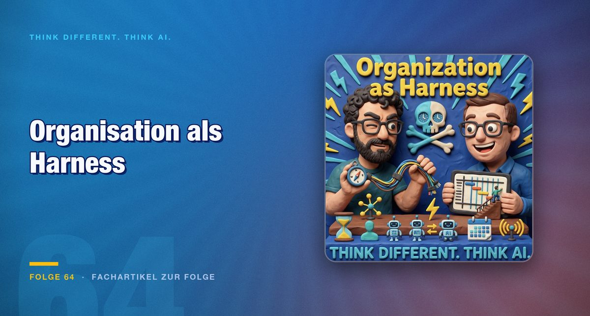

Folge 64 · Fachartikel zur Folge
Organisation als Harness: Wie ein Unternehmen KI-Werkzeuge in Arbeit übersetzt
Ein Werkzeug im Software-Stack ändert noch keine Rollen. Entscheidend ist, wie eine Organisation ihre Menschen einbezieht, wenn sich die Arbeit verändert.

Wie begleitet man Menschen auf dem Weg in die KI-Welt, ohne dass sie abgehängt werden? Diese Frage eröffnet Jens in der Folge. Er und Mark wollen ihre Sicht schildern und freuen sich ausdrücklich über Widerspruch. Schon das Wort Harness bereitet ihnen Mühe: Für den Begriff, der in der Folge für das Gerüst aus Werkzeugen, Regeln und Abläufen um ein Modell steht, fällt beiden keine gute deutsche Entsprechung ein.
Die Schlagworte beiseite
Bevor es ernst wird, räumen Mark und Jens die Social-Media-Bilder beiseite: den Roboter, der vor einem Notebook tippt, den „AI Patty Flipper“, der nach dem Auftrag nur noch auf Weiter drückt, und den Satz, nicht die KI ersetze einen, sondern der Mensch, der besser mit KI umgehe. Mark erzählt, was ihn überzeugt, dass die Veränderung längst läuft.
Diese Einordnung ist wichtig, weil sie den Blick verschiebt. Wer auf den einzelnen Menschen mit dem besten Werkzeug schaut, übersieht die Organisation drumherum. Die Folge geht deshalb von der Organisation aus.
Zeit gewinnen heißt noch nicht Wert schaffen
Mark zweifelt an Aussagen wie „Copilot für alle“ als KI-Strategie und an Studien, nach denen sich viele Beschäftigte produktiver fühlen. Offen bleibt, was mit der gewonnenen Zeit passiert. Schneller zur Kantine zu gehen, schafft keinen Wert.
Ein Werkzeug im Stack ändert außerdem keine Rollen. Systeme, die jahrelang nicht gepflegt wurden, lassen sich jetzt bereinigen. Doch wer die frei gewordene Zeit nicht bewusst in andere Aufgaben lenkt, verliert sie im Alltag wieder. Hier setzt die Idee der Harness an: Eine Organisation braucht ein Gerüst aus Regeln, Wissen und Abläufen, in dem KI-Werkzeuge einen definierten Platz haben.
Der Job ändert sich, er verschwindet nicht
Beide betonen, dass sich der Job ändert, ohne zu verschwinden. Eine Organisation muss dafür ehrlich sein. Die Folge fragt, wie man Menschen dazu bringt, sich zusammen mit der Maschine zu verändern. Eine Antwort lautet: Man muss sie beteiligen. Es hat etwas mit Beteiligung zu tun, sagt die Folge an einer Stelle knapp, und meint damit, dass Transformation nicht von oben verordnet werden kann.
Jens plädiert dafür, zu den Teams zu gehen, ihre Arbeitsabläufe zu beobachten und gemeinsam die zeitfressenden Stellen zu finden. Schnelle Prototypen helfen dabei, weil sie zeigen, was funktioniert, bevor eine große Einführung beginnt. Wer alles vorgibt, erzeugt Widerstand, und Widerstand kann auch schlicht Zeitmangel sein.
„Wir sind einfach nicht für Schubladen gedacht.“
Rollen und Grenzen
Im dritten Teil geht es um Rollen. Menschen überschreiten ständig die Grenzen ihrer Rolle, sagt Jens, mit KI-Hilfe sogar in Fachgebiete wie das Recht hinein. Die Entscheidung bleibt dabei beim Fachmenschen. Die Gefahr liegt darin, dass man die KI, die alle Rollen kennt, wieder in künstliche Rollen zwängt, wie es in der Industrialisierung mit Menschen geschah.
Das Schlagwort Human in the Loop hält die Folge für zu eng. Gebraucht werde das Team in the Loop, nicht der einzelne Experte, der alles bewerten könne. Einen solchen Experten gebe es in der Praxis ohnehin nicht.
Fazit
Die Folge sagt nicht, dass Jobs verschwinden. Sie sagt, dass sich Zusammenarbeit und Einstiegswege ändern. Der Engpass liegt weniger im Modell als im Wissen eines Unternehmens und in der Art, wie Menschen befähigt werden.
Für Führungskräfte heißt das: Stellen Sie die Frage nach dem Gerüst um das Werkzeug. Welche Regeln gelten, wer entscheidet was, und wie kommen die Erfahrungen aus den Teams zurück in die Organisation? Ein Werkzeug ohne diese Antworten bleibt ein Werkzeug.